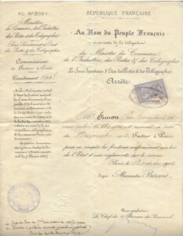

Sommaires des anciens numéros
Sommaire du bulletin 163 –avril 2023
- Éditorial
- Les recherches des dossiers de postiers dans les Archives
- Le sort cruel de Jean TALBOT, facteur rural débutant, mort d’épuisement et de froid en 1868
- Élections en 1911 au sein de l’administration des Postes et Télégraphes
- Des dossiers de personnel de la Dordogne conservés aux Archives Nationales
- Les prestations de serment des fonctionnaires des Postes en Côte-d’Or en 1852
- L’indexation du terrier de l’abbaye de Saint-Julien proposée par les Archives Départementales d’Indre-et-Loire
- Les chevaucheurs ordinaires d’écurie du roi tenant les postes sur la route de Chamarande à Orléans au 16ème siècle
- Grâce au Loto du patrimoine, la restauration de la halle médiévale de Marigny-en-Orxois devient possible !
- Quiz langue française : Connaissez-vous l’origine de ces 7 expressions populaires ?
- Participation du CGPTT aux salons de généalogie
________________________________
Quelques dossiers de postiers :
DUMEZ Émile François né le 24/7/1879 à Levallois-Perret, commis des postes en 1908, puis chef de brigade, habitait à Paris 18ème, trésorier de la Société de secours mutuels des ambulants des postes de Paris de 1929 à 1936
BOULIERE Joseph né le 13/8/1830 à Treignac (Corrèze), surveillant des lignes télégraphiques à Limoges, surveillant facteur, a reçu la médaille du travail (bronze) en 1886 après 25 ans au service
BOURDOURESQUE François Marius né le 1/7/1874 Mirepoix (Ariège) employé des Postes à partir de mars 1912 à Gap, puis commis principal, a pris sa retraite en avril 1937, décédé le 11/6/1941 à Mirepoix (Ardèche)
MARIN Joseph Marius né le 17/11/1864 à La-Balme-les-Grottes (Isère), facteur des Postes à La-Balme-les-Grottes (Isère), a reçu la médaille de bronze des PTT après 32 ans 2 mois de service, décédé le 1/9/1946 à La-Balme-les-Grottes (Isère)
SIMON Léon Maximilien né le 28/2/1878 à Paris 6ème, facteur aux télégraphes à Paris en 1898, facteur à Paris en 1903, a prêté serment à la justice de Paix du 7ème arrondissement de Paris, a reçu la médaille d’honneur des PTT, retraité en 1932, décédé le 11/10/1943 à Cuzion (Indre)

SIMON Léon Maximilien nommé facteur à Paris au nom du peuple français, nomination signé du Ministre du Commerce, de l’Industrie, des Postes et des Télégraphes Alexandre Bérard
Alexandre Bérard, né le 3 février 1859 à Lyon et mort le 20 avril 1923 à Paris, est un avocat et homme politique français. Il a été d’abord élu conseiller Général d’Ambérieu (il le restera jusqu’à sa mort). Une statue rappelle cette homme à Ambérieu (Ain).

COULOMB Emile né le 24/7/1886 à Paris 14ème, facteur à Paris avant la guerre 1914-1918, facteur-receveur à Péronville (Eure-et-Loir) jusqu’à son décès le 28/2/1928 suite à des blessures de guerre; son épouse Marie PERRON née en 1888 l’a remplacé dans ce bureau de Péronville (Eure-et-Loir) avant de revenir à Paris où elle est décédée en 1962.

La feuille de personnel retrouvée dans un triste état aux archives Départementales d’Eure-et-Loir (cote 3ETP80) permet de retracer la carrière avec le grade et les différentes affectations : facteur rouleur à Paris 25, facteur des Postes à Paris 28, facteur affecté aux imprimés à Paris 14, facteur distributeur à Paris 15 facteur rouleur aux services financiers à Paris 14. nommé – après concours – facteur receveur à Les-Corvées-les-Yys (Eure-et-Loir) puis à Péronville (Eure-et-Loir). Elle permet aussi de connaitre le traitement (salaire annuel).

Cette feuille de personnel permet aussi de connaitre la date de la prestation de serment le 10 août 1909. Dans son coté anecdotique, elle décrit un manquement à son obligation de faire la 8eme levée des boites (aux lettres). Les faits ont été amnistiés.
Sommaire du bulletin 164 – septembre 2023
- Les recherches des dossiers de postiers dans les Archives
- En 2023, le Foyer de Cachan, orphelinat des PTT, fête ses 100 ans le foyer PTT de Cachan 1923 – 2023 ( Nos sources n°164 )
- La prestation de serment des fonctionnaires des Postes
- Hommage aux résistants du réseau PTT de Saint-Lô
- Les chevaucheurs ordinaires d’écurie du roi tenant les postes sur la route de Chamarande à Orléans au 16ème siècle (2ème partie)
- Quand les cartes postales servaient de convocation par le Juge de Paix
- La Grande Collecte des archives du sport
- Assemblée Générale 2023 du CGPTT
- Le projet Socface
_______________________
Les dossiers de postiers parus dans ce bulletin :
BOSC Elie Auguste Pierre a débuté surnuméraire à Toulouse Central en juillet 1898, puis de 1898 à juillet 1903 à Honfleur (Calvados), à Narbonne (Aude), à Carcassonne (Aude) puis à Narbonne (Aude), titularisé commis à Narbonne (Aude) le 1er juillet 1903, il y restera jusqu’en novembre 1913, nommé receveur de 2ème classe à Cerbère (Pyrénées-Orientales) en décembre 1913, le bureau sera surclassé en 1ère classe en mars 1919, muté à Nyons (Drôme) en 1925, puis à Toulouse Dupuy en 1928, Toulouse Bourse en 1931, Toulouse Bayard en 1934, retraité le 1er décembre 1937
CARRIERE Louis commis auxiliaire au bureau de Nîmes R.P. (Recette Principale) en 1892, commis titulaire en 1993 à Nîmes R.P. jusqu’en janvier 1903, nommé commis au bureau de Rennes R.P. (Recette Principale) de 1903 jusqu’à son décès en 1920
CAUDEL Jean Rémi Ernest commis auxiliaire à Châlons-en-Champagne puis à Reims pendant l’été 1887, puis toujours à Reims Principal de 1888 à 1893; nommé commis de 4ème classe en septembre 1893 à Reims, muté à Paris VIII en 1907, puis à Paris XVIII en temps que commis principal en 1917, nommé à Ax-les-Thermes (Ariège) en 1918, puis contrôleur à Saint-Jean-d’Angély (Charente-Maritime), a pris sa retraite le 16 août 1929
CAZALET Julien Antoine Fulcrand Jean surnuméraire à Montpellier dans le cadre du cours de formation, puis dans différents bureaux : Lyon, Joigny, Valence, Montpellier et Narbonne avant d’être nommé commis de 4ème classe à Narbonne en juillet 1884, puis à Sète. Il fera son service militaire de 3 ans avant de reprendre à Paris 83 en décembre 1890, puis à Bagnères-de-Luchon, à Paris XI, à Paris R.P. (son salaire était alors de 2700 Francs par an), devient receveur des postes à Saint-Pons (Hérault) en mars 1905, puis à Rueil (Hauts-de-Seine) en tant que receveur de 3ème classe (publication au Journal Officiel du 18 août 1911), puis à Paris 85, nommé receveur de 2ème classe en avril 1920 à Paris XX , puis à Paris XIX en 1921, a pris sa retraite le 1er octobre 1926
DUMEZ Émile François surnuméraire en juillet 1899 à Paris Central puis en août 1899 à Bayeux (Calvados), engagé volontaire en 1900 pour 3 ans dans l’armée, surnuméraire au bureau de tri de la gare Nord-Ouest en mai 1903, surnuméraire sédentaire aux bureaux ambulants ligne du Nord-Ouest en 1904, nommé commis sédentaire en octobre 1904, puis commis ambulant ligne du Nord-Ouest de juillet 1905 à 1925, admis à l’examen de contrôleur du service postal et nommé contrôleur en octobre 1926, trésorier de la Société de secours mutuels des ambulants des postes de Paris de 1929 à 1936.
GARGAM Yves Henri Emmanuel surnuméraire à Neuilly-sur-Seine en 1877 et à Cognac en 1878, commis sédentaire aux ambulants de ligne du Sud-ouest en 1978, puis commis ambulant sur la même ligne en 1978 et 1979, commis de 4ème classe à Laval de 1880 à 1885, commis de 3ème classe à Angoulême de 1885 à 1886, commis de direction à Caen en 1887, puis commis à Angoulême, Hyères, Cauterets, Lyon R.P. (Recette Principale), Libourne de 1888 à 1889, commis ambulant sédentaire à la ligne du Sud-ouest en 1890, commis ambulant sur la même ligne de 1892 à 1894, période militaire en 1895, commis ambulant sédentaire sur ligne de l’est en 1897, commis ambulant à la ligne de Lyon en 1898, commis au bureau de tri de la gare de Lyon de 1901 à 1906, révoqué 3 jours en avril 1906 , commis au bureau de tri de la gare de l’Est en 1906, commis sédentaire au bureau des ambulants de la ligne d l’Est en 1909, commis ambulant de la ligne du Sud-ouest de 1909 à 1912, commis ambulant de la ligne du Nord en 1912, retraité en 1922
JACOPY Marie-Thérèse Blanche épouse GILLET a été auxiliaire au bureau de Postes de Montendre (Charente-Maritime) en 1911. Elle passe un concours de dame employée pour être titulariser et se classe 350ème sur 700 reçus (7000 candidats). Elle est nommée au bureau de Billancourt (Hauts-de-Seine) en 1919. Elle est nommé receveuse à Cars (Gironde) le 1er décembre 1921, puis est muté à Agen en septembre 1929 en temps que dame employée, devient dame commis principal à Agen et prend sa retraite le 1er décembre 1941
KLENCK Charles expéditionnaire à l’administration centrale des Postes et Télégraphes à Paris de mars 1896 à octobre 1907, muté à la Direction des Postes de Châteauroux (Indre), a pris sa retraite le 1er septembre 1923.
MAZIER Claude Eduardo commis auxiliaire à la recette principale de la Seine Paris R.P. en 1891, commis auxiliaire sédentaire aux bureaux des ambulants de la ligne du Nord en 1894, commis auxiliaire ambulant à la ligne de l’Ouest en 1895, commis auxiliaire ambulant à la ligne de Lyon en mai 1895, commis titulaire de décembre 1898 à 1920, contrôleur aux ambulants ligne du Nord en mars 1921, retraité le 16/12/1924
MERLE Jean Émile télégraphiste à Lyon, commis auxiliaire à Lyon en juillet 1886, demande à être mis en disponibilité à partir du 10/1/1888, crée la fanfare des Postes et Télégraphes à Lyon en 1894, artiste, régisseur et metteur en scène du grand théâtre de Lyon, puis à Toulouse, à Bruxelles et enfin à l’opéra de Paris, nommé officier d’académie des beaux-arts par décret au Journal officiel du 3/3/1902
NALTET Jeanne Marie Céleste épouse ANDRIEUX employée auxiliaire des postes à Paris au bureau n° 70 de février 1893 à juin 1893, nommé dame employée en août 1893 à Paris au bureau n° 23, mise en disponibilité en novembre 1896
REYNAUD Albert Jean Casimir nommé rédacteur principal caissier de la succursale de la Caisse Nationale d’Épargne à Macon (Saône-et-Loire) le 1er octobre 1928, nommé receveur de 3ème classe le 16 juillet 1929 au Creusot (Saône-et-Loire) avec un traitement de 24.000 francs
Sommaire du bulletin 165 – décembre 2023
- Éditorial
- Les recherches des dossiers de postiers dans les Archives
- Louis Eugène Joubert facteur rural
- Une famille de postiers dans les Hautes-Alpes : les Pellegrin et les Marrou
- Historique du personnel de la Poste d’Alsace-Moselle à travers la carrière du facteur Julien Hombourger
- Mes ancêtres, leur famille et le sel
- Les postiers travaillant en Indochine
- Quinquin, le plus jeune résistant de France « mort pour la France » en 1944 à l’âge de 6 ans
- Marianne
- Livre : Cheminots, traminots et employés du métro : retrouver leur histoire – Éditions Archives et Culture 2023
- Livre : Quand une simple carte postale déclenche un retour sur le passé familial : le livre d’Anne BEREST : la carte postale
___________________________________________
Quelques recherches sur des postiers
MAUMY Jean Baptiste né le 28/2/1904 à Verneuil-sur-Vienne (Haute-Vienne), chargeur (auxiliaire) à Limoges Gare en juillet 1929, titularisé le 1er août 1930 Paris Sud-ouest avec une affectation à Limoges Gare, puis à partir de 1933 à Limoges RP (Recette Principale) avec un salaire annuel de 9300 francs, par suite de la réforme des cadres C et D de 1957 a été nommé préposé acheminement à Limoges RP, décédé le 21/10/1958 à Limoges (Haute-Vienne)
BONIN Jeanne Julie née le 25/2/1828 à Paris 2ème, receveuse des postes à Claye-Souilly (Seine-et-Marne) à partir de 1868 (présence confirmée en 1872 et 1875), a pris sa retraite le 1/10/1890 après 22 ans et 5 mois de service et s’est retirée à Paris
CHASSAING Pierre né le 7/10/1973 à Meyssac (Corrèze), facteur auxiliaire à Meyssac (Corrèze), puis facteur rural à Meyssac (Corrèze) 16/09/1906, facteur local à Ussac (Corrèze) 16/10/1909, facteur rural à Bar (Corrèze) 1/06/1914, victime d’un accident de service et décédé le 11 septembre 1926 à Beaulieu-sur-Dordogne (Corrèze), a reçu la médaille d’or des PTT le 13 septembre1926
GROSBOIS Madeleine Anne Elisabeth (dite Manon) née le 17/3/1891 à Neuilly-sur-Seine (Hauts-de-Seine), téléphoniste au central Gutenberg à Paris dans les années 20 et les années 30, décédée le 8/3/1965 à Hyères (Var)

Madeleine GROSBOIS est la 2ème en partant de la droite
Central Gutenberg (Document transmis par le petit-fils de Madeleine Grosbois)
VIVIN Marie Louis Auguste (Louis) né à Hadol (Vosges) le 28/7/1861, entré dans l’administration des Postes comme commis ambulant le 1er octobre 1879, nommé chef de brigade sur les ambulants de ligne de l’Est en septembre 1898, avec un salaire annuel de 3300 francs, peintre autodidacte, contemporain du Douanier Rousseau, il a connu un incroyable destin, avec des toiles dans les plus grands musées du monde, il doit sa renommée à un galeriste allemand féru d’art naïf Wilhelm Ude. En 1882 il épousa Marie Clothilde Montgrand et eurent en 1882 une fille Louise Marie Clothilde VIVIN (qui décédera en couches à 20 ans en 1903 lors de la naissance d’un enfant Raymond Cyrille Adolphe Vivin). Il a participé aux salons des PTT en 1889, en 1903, en 1906 il exposa au salon des PTT : « La récolte des pommes de terre ». En 1892, il s’installa au 114 rue Caulaincourt à Montmartre où il y vécut jusqu’à sa mort en 1936. Après sa retraite en 1922, il se consacra uniquement à la peinture, parcourant Montmartre dans tous les sens. Entièrement autodidacte, il ne fréquenta aucun peintre. il est décédé le 23/5/1936 à Paris 18ème
 Canaux en hiver, Louis Vivin – 1899 – Musée d’art naïf et d’arts singuliers, Laval, France.
Canaux en hiver, Louis Vivin – 1899 – Musée d’art naïf et d’arts singuliers, Laval, France.